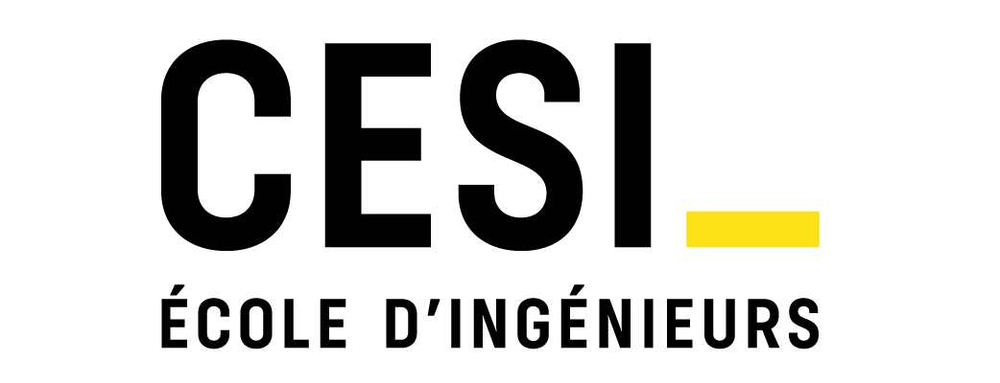

age : 19 ans
étude : bac+2
permis : B
anglais : B1
Je suis actuellement engagé dans mes études d'ingénieur à la prépa intégrée du CESI. Cette institution se démarque par son enseignement basé sur l'apprentissage par projet, ce qui favorise le développement des compétences ainsi que l'autonomie.
Je suis actuellement à la recherche d'un stage dans le domaine du développement d'application ou de site web, idéalement pour la période allant du 8 avril au 26 juillet, avec la possibilité d'évoluer vers une alternance. Ma passion pour le développement m'a conduit à explorer de nouvelles opportunités dans ce domaine en vue d'enrichir mes compétences et de contribuer à des projets innovants.
Au cours de mes études, j'ai eu le privilège de collaborer avec des équipes dynamiques sur divers projets, ce qui m'a permis de renforcer ma capacité à résoudre des problèmes de manière collaborative. Je suis convaincu que votre entreprise, réputée pour son excellence et ses activités stimulantes, serait l'environnement idéal pour développer mes compétences et contribuer à des projets ambitieux dans le domaine du développement.
Je suis enthousiaste à l'idée d'explorer de nouvelles opportunités. N'hésitez pas à me contacter pour discuter de toute opportunité de collaboration ou de stage en entreprise.